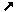

*ten/i
*teni ↝
(tr)
- 1. ↝
-
Malhelpi formoviĝon per fizika kontakto:
- a)
- (iu, ion, en korpoparto aŭ per ĝi) Esti kun la objekto en la manoj, brakoj kaj simile, malhelpante, ke ĝi falu aŭ moviĝu for de la koncerna korpoparto: teni bastonon; vi devas teni la kovrilon en la mano [1]; ŝi tenis en la brakoj ĵusnaskitan infaneton [2]; [la hundo] reaperis, tenante en sia buŝo grandan monujon [3]; objekton unu fojon kaptitan [la polipoj] tenis forte per centoj da malgrandaj brakoj [4]; la koboldo kaptis la mirindan libron […] kaj tenis ĝin forte per ambaŭ manoj [5]; li tenis inter la fingroj malgrandan rozokoloran paperon [6].
- b)
- (iu, ion, per ilo) Teni 1.a ion, ligitan al la koncerna objekto kaj malhelpantan, ke ĝi moviĝu for de oni: li plu ne bezonis tenadi la pupon (per ŝnuroj), ĝi povis mem danci [7]; teni per feraj ligiloj [8].
- c)
- (io, ion) Peri la agon de iu, kiu tenas1.a aŭ tenas1.b: Via mano min kondukos, kaj Via dekstra mano min tenos [9]; ŝiaj fingroj tenas la ŝpinturnilon [10].
- d) ↝
- (iun, je korpoparto) Teni (1.a, 1.b, 1.c) korpoparton de tiu, por zorge malhelpi foriron, falon, aŭ por montri intimecon: teni infanon per la mano, sur la genuoj; teni bovon je la kornoj; teni [kolombon] je la piedoj [11]; teni [la birdon] per rubando, ligita ĉirkaŭ unu el ĝiaj piedetoj [12]; Kant amis la hundeton, sed prefere tamen tenus ĉe la mano fileton [13].
 kapti,
preni,
porti
kapti,
preni,
porti - 2. ↝
- (figure)
Restigi:
- a)
- (iun) Restigi en iu loko aŭ stato, malhelpante ties foriron, liberiĝon: teni iun en malliberejo [14]; lia fianĉiĝo tenas lin malproksime de ĉiuj diboĉaĵoj [15]; la ŝnuroj de lia peko lin tenos [16]; la febro tenas lin; lia promeso tenas (ligas, devigas) lin; mi estas tenata de miaj okupoj.
- b)
- (ion) Metinte tion en iun lokon, restigi ĝin tie, malhelpante, ke iu ĝin forprenu, aŭ ke ĝi kvazaŭ meminiciate foriru: teni cigarojn en ĉambro, en skatoleto [17]; nuntempe tiu ebleco estas tenata en malvastaj limoj; Gordens, kun la manoj en la pantalonpoŝoj, tenis la rigardon demande sur la verkisto [18]; sub seruro promesojn tenu, sed doninte ne reprenu PrV ; sako alenon ne tenas, ĝi baldaŭ elvenas PrV ; la glaseto kun la blukolora ligna piedo ne dronis, la ligna ŝtipo tenis ĝin supre [19].
- c)
- (korpoparton) Restigi en ia pozicio: teni la manojn laŭlonge de la kruroj [20]; teni la piedojn sur benketo [21]; teni la okulojn en streĉo (daŭre observi) PrV ; mi tenis mian langon en la buŝo (ne parolis), per lipoj kunkudritaj [22]; kiu langon ne tenas (ne singarde parolas), mem sin malbenas PrV ; teni la kapon tre alte [23]; teni rekte la kapon; alte teni siajn okulojn kaj levi siajn palpebrojn [24]; malvirtulo tenas sian vizaĝon arogante [25]; teni la manojn eltirite en la aero [26], la orelojn streĉite [27], la okulojn malfermite [28]; teni la okulojn nefermitaj [29], la bekon fermita [30].
- d) ↝
- Zorgi, ke iu aŭ io restu en ia stato: teni la amason en spirita sklaveco; teni la landon en malĝojo [31]; amu edzinon plej kore, sed tenu ŝin bonmore PrV ; tenata en honoro, kiel maljuna avo [32]; kanti pri ĉio, kio estas tenata kaŝite tie malantaŭ seruro kaj riglilo [33]; vi devas teni la ĉambron en bona ordo [34]; teni [sian neston] en bona stato [35]; bonstato estis sentebla en la domo ... kaj ĉio estis bone tenata [36]; oni tenas preta kolekton da tute intence fabrikitaj skribaĵoj [37]; pli longe ol ĝis morgaŭ matene mi ĉiel ne povas teni ilin en provizora aresto [38]; teni iun antaŭ la okuloj (ne ĉesi lin observi) [39].
- e) ↝
- (ion abstraktan) Zorgi, ke tio restu senŝanĝa, ne perdiĝu: teni ion en la kapoK (konstante pensi pri tio); teni (ne malkaŝi, ne perfidi) sekreton; obstine teni (ne ŝanĝi) sian opinion; la memoro ne bone tenadis la vortojn [40]; teni memoron (memori) pri io; teni fidelecon al iu (resti fidela); teni (plenumi) sian promeson BdV ; teni la vorton Hamlet ; tenu forte la instruon kaj ne forlasu ĝin, konservu ĝin [41]; konservu prudenton kaj via buŝo tenu scion [42]; dube estas, ĉu tiuj neologismoj tenos la vivon; li scias konstante teni la atenton de la leganto.
Rim.: Egale bonaj estas „teni la kapon rekte“ aŭ „rekta“, „teni ion sekrete“ aŭ „sekreta“: la adverbo estas maniera adjekto kaj la adjektivo estas objekta predikativo. Tamen, se temas pri participo, la adverbaj formoj estas evitindaj, kvankam klasikaj, ĉar ilia uzo kiel maniera adjekto ne estas kutima. Aperas do risko kompreni, ke temas pri participa propozicio, kio kondukus al tute alia senco, ĉar la subjekto de la participo devas esti tiu de la ĉefa verbo, ne ĝia objekto. - 3.
- (figure)
Havi en sia povo:
- a) ↝
- (iun)
Havi moralan povon super iu, ekz-e kiel gepatroj super la
gefiloj:
ili devus teni min pli severe, pensis Inger, ili
devus
elpeli el mi miajn malbonajn inklinojn
[43];
mi devas esti maldelikata kaj severa, se mi volas teni en
ordo miajn filojn
[44];
teni iun per fera mano
(severe regi, senindulge obeigi)
PrV
;
se ili estintus tiel lertaj, ke ili lasintus al mi ian lumeton
de espero, ili ĉiam ankoraŭ tenus min per tio
[45].
bridi,
disciplini,
eduki,
mastri,
regi
- b) ↝
- (ion)
Mastrumi, funkciigi, regi:
teni butikon, negocon, oficejon;
teni la regstangojn de afero
(fadeno)
[46];
la lernejoj estas tenataj je la kalkulo (kosto)
de la komunumo
FK
;
teni (okupi) oficon;
librotenado;
meze de tiom da riĉaĵoj, kiel teni fidelan
registron de ili?
[47];
teni (okazigi) kunvenon;
la sorto kaj la volo eterne inter si batalon
tenas
Hamlet
.
mastrumi,
okazigi,
okupi,
regi
- c) ↝
- (iun)
Esti ies labor- aŭ nutro-donanto:
teni serviston;
komence ŝi tenis por [sia filino] guvernantinon
Marta
;
ili povus eĉ teni paron da ĉevaloj
[48];
teni amdonantinon, aŭtomobilon
PIV1
;
mi ne povas teni vin ĉi tie, kiam mi havos
ĉirkaŭ mi familian rondon
[49].
dungi,
laborigi,
mastri,
nutri
1.
H. C. Andersen, trad. L. L. Zamenhof: Fabeloj, vol. 1, Malgranda Niko kaj granda Niko
2. H. C. Andersen, trad. L. L. Zamenhof: Fabeloj, vol. 4, Historio el la dunoj
3. H. C. Andersen, trad. L. L. Zamenhof: Fabeloj, vol. 1, Fajrilo
4. H. C. Andersen, trad. L. L. Zamenhof: Fabeloj, vol. 1, La virineto de maro
5. H. C. Andersen, trad. L. L. Zamenhof: Fabeloj, vol. 3, Koboldo ĉe la butikisto
6. H. C. Andersen, trad. L. L. Zamenhof: Fabeloj, vol. 1, Galoŝoj de feliĉo
7. H. C. Andersen, trad. L. L. Zamenhof: Fabeloj, vol. 1, Vojkamarado
8. H. C. Andersen, trad. L. L. Zamenhof: Fabeloj, vol. 1, La virineto de maro
9. trad. L. L. Zamenhof: La Malnova Testamento, Psalmaro 139:12
10. trad. L. L. Zamenhof: La Malnova Testamento, Sentencoj 31:19
11. H. C. Andersen, trad. L. L. Zamenhof: Fabeloj, vol. 2, Neĝa reĝino (kvina rakonto)
12. H. C. Andersen, trad. L. L. Zamenhof: Fabeloj, vol. 2, La najtingalo
13. Deck Dorval: Urd Hadda murdita!, p. 22
14. trad. L. L. Zamenhof: La Malnova Testamento, Genezo 39:20
15. H. C. Andersen, trad. L. L. Zamenhof: Fabeloj, vol. 4, Sterkskarabo
16. trad. L. L. Zamenhof: La Malnova Testamento, Sentencoj 5:22
17. L. L. Zamenhof: Fundamento de Esperanto, Ekzercaro, § 40
18. Deck Dorval: Urd Hadda murdita!, p. 9
19. H. C. Andersen, trad. L. L. Zamenhof: Fabeloj, vol. 4, Anneto
20. N. V. Gogol, trad. L. L. Zamenhof: La Revizoro, Akto kvara
21. L. L. Zamenhof: Fundamento de Esperanto, Ekzercaro, § 26
22. Deck Dorval: Urd Hadda murdita!, p. 10
23. H. C. Andersen, trad. L. L. Zamenhof: Fabeloj, vol. 4, Dekdu per la poŝto
24. trad. L. L. Zamenhof: La Malnova Testamento, Sentencoj 30:13
25. trad. L. L. Zamenhof: La Malnova Testamento, Sentencoj 21:29
26. H. C. Andersen, trad. L. L. Zamenhof: Fabeloj, vol. 1, La novaj vestoj de la reĝo
27. H. C. Andersen, trad. L. L. Zamenhof: Fabeloj, vol. 3, Ŝtono de la saĝuloj
28. H. C. Andersen, trad. L. L. Zamenhof: Fabeloj, vol. 4, Historio el la dunoj
29. H. C. Andersen, trad. L. L. Zamenhof: Fabeloj, vol. 1, Vojkamarado
30. H. C. Andersen, trad. L. L. Zamenhof: Fabeloj, vol. 1, Ĝardeno de la Paradizo
31. trad. L. L. Zamenhof: La Malnova Testamento, Jeremia 12:4
32. H. C. Andersen, trad. L. L. Zamenhof: Fabeloj, vol. 3, Lino
33. H. C. Andersen, trad. L. L. Zamenhof: Fabeloj, vol. 4, Sonorila profundo
34. H. C. Andersen, trad. L. L. Zamenhof: Fabeloj, vol. 1, Elinjo-fingreto
35. H. C. Andersen, trad. L. L. Zamenhof: Fabeloj, vol. 4, La vento rakontas pri Valdemaro Doe kaj pri liaj filinoj
36. H. C. Andersen, trad. L. L. Zamenhof: Fabeloj, vol. 4, Historio el la dunoj
37. Jean-Jacques Rousseau, trad. André Gilles: La revadoj de soleca promenanto, Dua promenado
38. Deck Dorval: Urd Hadda murdita!, p. 8
39. Deck Dorval: Urd Hadda murdita!, p. 6
40. L. L. Zamenhof: Lingvaj Respondoj, 4. Fonetiko
41. trad. L. L. Zamenhof: La Malnova Testamento, Sentencoj 4:13
42. trad. L. L. Zamenhof: La Malnova Testamento, Sentencoj 5:2
43. H. C. Andersen, trad. L. L. Zamenhof: Fabeloj, vol. 4, Knabino
44. H. C. Andersen, trad. L. L. Zamenhof: Fabeloj, vol. 1, Ĝardeno de la Paradizo
45. Jean-Jacques Rousseau, trad. André Gilles: La revadoj de soleca promenanto, Unua promenado
46. L. Bourgois: Esprimaro franca-esperanta, 1997
47. Jean-Jacques Rousseau, trad. André Gilles: La revadoj de soleca promenanto, Dua promenado
48. H. C. Andersen, trad. L. L. Zamenhof: Fabeloj, vol. 3, Ib kaj malgranda kristino
49. H. C. Andersen, trad. L. L. Zamenhof: Fabeloj, vol. 2, Najbaraj familioj
2. H. C. Andersen, trad. L. L. Zamenhof: Fabeloj, vol. 4, Historio el la dunoj
3. H. C. Andersen, trad. L. L. Zamenhof: Fabeloj, vol. 1, Fajrilo
4. H. C. Andersen, trad. L. L. Zamenhof: Fabeloj, vol. 1, La virineto de maro
5. H. C. Andersen, trad. L. L. Zamenhof: Fabeloj, vol. 3, Koboldo ĉe la butikisto
6. H. C. Andersen, trad. L. L. Zamenhof: Fabeloj, vol. 1, Galoŝoj de feliĉo
7. H. C. Andersen, trad. L. L. Zamenhof: Fabeloj, vol. 1, Vojkamarado
8. H. C. Andersen, trad. L. L. Zamenhof: Fabeloj, vol. 1, La virineto de maro
9. trad. L. L. Zamenhof: La Malnova Testamento, Psalmaro 139:12
10. trad. L. L. Zamenhof: La Malnova Testamento, Sentencoj 31:19
11. H. C. Andersen, trad. L. L. Zamenhof: Fabeloj, vol. 2, Neĝa reĝino (kvina rakonto)
12. H. C. Andersen, trad. L. L. Zamenhof: Fabeloj, vol. 2, La najtingalo
13. Deck Dorval: Urd Hadda murdita!, p. 22
14. trad. L. L. Zamenhof: La Malnova Testamento, Genezo 39:20
15. H. C. Andersen, trad. L. L. Zamenhof: Fabeloj, vol. 4, Sterkskarabo
16. trad. L. L. Zamenhof: La Malnova Testamento, Sentencoj 5:22
17. L. L. Zamenhof: Fundamento de Esperanto, Ekzercaro, § 40
18. Deck Dorval: Urd Hadda murdita!, p. 9
19. H. C. Andersen, trad. L. L. Zamenhof: Fabeloj, vol. 4, Anneto
20. N. V. Gogol, trad. L. L. Zamenhof: La Revizoro, Akto kvara
21. L. L. Zamenhof: Fundamento de Esperanto, Ekzercaro, § 26
22. Deck Dorval: Urd Hadda murdita!, p. 10
23. H. C. Andersen, trad. L. L. Zamenhof: Fabeloj, vol. 4, Dekdu per la poŝto
24. trad. L. L. Zamenhof: La Malnova Testamento, Sentencoj 30:13
25. trad. L. L. Zamenhof: La Malnova Testamento, Sentencoj 21:29
26. H. C. Andersen, trad. L. L. Zamenhof: Fabeloj, vol. 1, La novaj vestoj de la reĝo
27. H. C. Andersen, trad. L. L. Zamenhof: Fabeloj, vol. 3, Ŝtono de la saĝuloj
28. H. C. Andersen, trad. L. L. Zamenhof: Fabeloj, vol. 4, Historio el la dunoj
29. H. C. Andersen, trad. L. L. Zamenhof: Fabeloj, vol. 1, Vojkamarado
30. H. C. Andersen, trad. L. L. Zamenhof: Fabeloj, vol. 1, Ĝardeno de la Paradizo
31. trad. L. L. Zamenhof: La Malnova Testamento, Jeremia 12:4
32. H. C. Andersen, trad. L. L. Zamenhof: Fabeloj, vol. 3, Lino
33. H. C. Andersen, trad. L. L. Zamenhof: Fabeloj, vol. 4, Sonorila profundo
34. H. C. Andersen, trad. L. L. Zamenhof: Fabeloj, vol. 1, Elinjo-fingreto
35. H. C. Andersen, trad. L. L. Zamenhof: Fabeloj, vol. 4, La vento rakontas pri Valdemaro Doe kaj pri liaj filinoj
36. H. C. Andersen, trad. L. L. Zamenhof: Fabeloj, vol. 4, Historio el la dunoj
37. Jean-Jacques Rousseau, trad. André Gilles: La revadoj de soleca promenanto, Dua promenado
38. Deck Dorval: Urd Hadda murdita!, p. 8
39. Deck Dorval: Urd Hadda murdita!, p. 6
40. L. L. Zamenhof: Lingvaj Respondoj, 4. Fonetiko
41. trad. L. L. Zamenhof: La Malnova Testamento, Sentencoj 4:13
42. trad. L. L. Zamenhof: La Malnova Testamento, Sentencoj 5:2
43. H. C. Andersen, trad. L. L. Zamenhof: Fabeloj, vol. 4, Knabino
44. H. C. Andersen, trad. L. L. Zamenhof: Fabeloj, vol. 1, Ĝardeno de la Paradizo
45. Jean-Jacques Rousseau, trad. André Gilles: La revadoj de soleca promenanto, Unua promenado
46. L. Bourgois: Esprimaro franca-esperanta, 1997
47. Jean-Jacques Rousseau, trad. André Gilles: La revadoj de soleca promenanto, Dua promenado
48. H. C. Andersen, trad. L. L. Zamenhof: Fabeloj, vol. 3, Ib kaj malgranda kristino
49. H. C. Andersen, trad. L. L. Zamenhof: Fabeloj, vol. 2, Najbaraj familioj
- angle:
- hold
- beloruse:
- трымаць
- ĉeĥe:
- držet, mít, nechat si, nést, podržet, udržovat, zachovat
- france:
- tenir (tr.), conserver (détenir, garder), détenir, entretenir (à ses frais), maintenir (conserver), garder (conserver) ~i iun antaŭ la okuloj: avoir qn à l'œil ~i ion en la kapo: avoir qc dans la tête ~i la vorton: tenir parole ~i la atenton de: tenir en haleine ~i la regstangojn: tenir les leviers
- germane:
- 1.a halten 1.b festhalten 1.c halten ~i bovon je la kornoj: den Stier bei den Hörnern packen 1.d stützen 2.a festhalten, zurückhalten 2.b haben 2.c halten 2.d halten, in einem Zustand erhalten ~i la vorton: Wort halten 2.e behalten 3.a anhalten 3.b betreiben 3.c halten (sich)
- hispane:
- retener, mantener, conservar ~i iun antaŭ la okuloj: mantener algo delante de los ojos ~i ion en la kapo: pensar continuamente en algo ~i la vorton: ser fiel a la palabra dada ~i la atenton de: mantener la atención ~i la regstangojn: tener el mando
- hungare:
- tart, fog, tárol sako alenon ne ~as, ĝi baldaŭ elvenas : kibújik a szög a zsákból ~i ion en la kapo: fejben tart ~i la vorton: tartja a szavát ~i la atenton de: leköti a figyelmét ~i iun per fera mano: vasmarokkal fog ~i la regstangojn: mozgatja a szálakat
- itale:
- tenere
- kurde:
- pê girtin, tepiş, derdest kirin
- nederlande:
- 1. houden, vasthouden 2. houden, vasthouden 3.a domineren, overheersen 3.b houden, beheren 3.c op na houden, onderhouden, in dienst hebben
- pole:
- trzymać 1. trzymać, przytrzymywać, podtrzymywać,, ściskać (mocno trzymać) 2. trzymać, przytrzymywać, zatrzymywać 3.a trzymać, utrzymywać 3.b utrzymywać, prowadzić, zarządzać 3.c trzymać, utrzymywać
- portugale:
- segurar, sustentar, ter, manter, conservar, guardar
- ruse:
- держать
- slovake:
- držať, udržiavať, zachovať
- volapuke:
- 1.a kipön
sin teni ↝
- 1. ↝
- Resti firme en ia pozicio malgraŭ kontraŭaj fortoj (ekz-e pezo, skuoj,...): sin teni kviete; li nur malfacile povis sin teni sur la piedoj [50]; teni sin per ambaŭ manoj je la tablo; la rano […] tenis sin forte je la kolharoj de la besto [51]; tenu vin forte je mi! [52]; [la tulipoj] tenis sin rekte kiel kandeloj [53]; sako malplena sin rekte ne tenas PrV ; frukto sin komence tenas (restas firme alligita al la arbo), sed falas, kiam maturiĝo venas Hamlet ; ne povi plu sin teni (firme kontraŭstari, malcedi) antaŭ siaj malamikoj [54].
- 2. ↝
- Teni1.d unu la alian: la fratino kaj la fratoj tenis sin reciproke je la manoj kaj kantis preĝojn [55].
- 3. ↝
- (figure) Teniĝi2: vazo rompita longe sin tenas PrV ; ekzistas lingvo artefarita, kiu montriĝis tute vivipova, bonege funkcias, bonege sin tenas jam multe da jaroj [56].
- 4.
- (figure) Firme resti en la sama spiritostato: sin teni (ne ŝanĝi) je sia opinio BdV ; kiu sin tenos (rezistos) kontraŭ envio [57]? sin teni je la vero [58]; ĝenerale mi tenas min je la sekvanta principo [59]; mi por la cetero de mia vivo tenas min je la decido, kiun mi adoptis, kiam mi pli kapablis bone elekti [60]; mi sekve min tenis je (volis nenion alian, ol) tio, kio estis en mia atingebleco [61]; kiu entreprenis, tiu sin tenu (persistu) PrV .
- 5.
- (figure) Iel konduti, rilati: sin teni prudente [62], silente kaj trankvile [63]; li tenis sin tiel fremde kontraŭ ŝi [64]; [la egiptaj birdoj] tenas sin tre grandsinjore, precipe la ibiso [65]; spiko malplena plej alte sin tenas PrV ; teni sin je dispono de la justico [66]; ili legas, kiel sin tenis kontraŭ (opiniis pri) tiu ideo la samtempuloj EE .
50.
H. C. Andersen, trad. L. L. Zamenhof: Fabeloj, vol. 1, Ĝardeno de la
Paradizo
51. H. C. Andersen, trad. L. L. Zamenhof: Fabeloj, vol. 4, Filino de la marĉa reĝo
52. H. C. Andersen, trad. L. L. Zamenhof: Fabeloj, vol. 4, Anneto
53. H. C. Andersen, trad. L. L. Zamenhof: Fabeloj, vol. 1, Lekanto
54. trad. L. L. Zamenhof: La Malnova Testamento, Juĝistoj 2:14
55. H. C. Andersen, trad. L. L. Zamenhof: Fabeloj, vol. 1, Sovaĝaj cignoj
56. L. L. Zamenhof: Paroloj, Malferma parolado de la 6a UK en Washington (1910-08-15)
57. trad. L. L. Zamenhof: La Malnova Testamento, Sentencoj 27:4
58. H. C. Andersen, trad. L. L. Zamenhof: Fabeloj, vol. 4, Du fratoj
59. L. L. Zamenhof: Lingvaj Respondoj, 5. Kazosintakso
60. Jean-Jacques Rousseau, trad. André Gilles: La revadoj de soleca promenanto, Tria promenado
61. Jean-Jacques Rousseau, trad. André Gilles: La revadoj de soleca promenanto, Tria promenado
62. trad. L. L. Zamenhof: La Malnova Testamento, Sentencoj 28:26
63. H. C. Andersen, trad. L. L. Zamenhof: Fabeloj, vol. 2, La ombro
64. H. C. Andersen, trad. L. L. Zamenhof: Fabeloj, vol. 4, Anneto
65. H. C. Andersen, trad. L. L. Zamenhof: Fabeloj, vol. 4, Filino de la marĉa reĝo
66. Deck Dorval: Urd Hadda murdita!, p. 9
51. H. C. Andersen, trad. L. L. Zamenhof: Fabeloj, vol. 4, Filino de la marĉa reĝo
52. H. C. Andersen, trad. L. L. Zamenhof: Fabeloj, vol. 4, Anneto
53. H. C. Andersen, trad. L. L. Zamenhof: Fabeloj, vol. 1, Lekanto
54. trad. L. L. Zamenhof: La Malnova Testamento, Juĝistoj 2:14
55. H. C. Andersen, trad. L. L. Zamenhof: Fabeloj, vol. 1, Sovaĝaj cignoj
56. L. L. Zamenhof: Paroloj, Malferma parolado de la 6a UK en Washington (1910-08-15)
57. trad. L. L. Zamenhof: La Malnova Testamento, Sentencoj 27:4
58. H. C. Andersen, trad. L. L. Zamenhof: Fabeloj, vol. 4, Du fratoj
59. L. L. Zamenhof: Lingvaj Respondoj, 5. Kazosintakso
60. Jean-Jacques Rousseau, trad. André Gilles: La revadoj de soleca promenanto, Tria promenado
61. Jean-Jacques Rousseau, trad. André Gilles: La revadoj de soleca promenanto, Tria promenado
62. trad. L. L. Zamenhof: La Malnova Testamento, Sentencoj 28:26
63. H. C. Andersen, trad. L. L. Zamenhof: Fabeloj, vol. 2, La ombro
64. H. C. Andersen, trad. L. L. Zamenhof: Fabeloj, vol. 4, Anneto
65. H. C. Andersen, trad. L. L. Zamenhof: Fabeloj, vol. 4, Filino de la marĉa reĝo
66. Deck Dorval: Urd Hadda murdita!, p. 9
- beloruse:
- трымацца
- france:
- se tenir, se comporter, se conduire, s'en tenir (à), se contenter (de) ~i sin je dispono: se tenir à disposition
- germane:
- 1. sich halten 2. sich halten 3. sich halten 4. bleiben 5. sich verhalten
- hispane:
- contenerse, mantenerse, comportarse ~i sin je dispono: estar a disposición
- hungare:
- 1. tartja magát 2. egymást tartják 3. fennáll 4. marad spiko malplena plej alte sin ~as: üres kalász fenn tartja a fejét ~i sin je dispono: rendelkezésre áll 5. viselkedik
- pole:
- trzymać się 1. utrzymywać się 2. przytrzymywać się, podtrzymywać się 3. wytrzymywać 4. wytrzymywać, trwać
- ruse:
- держаться
teno
- 1.
- Ago teni: ŝi levis la ŝultrojn, kaj […] diris kun teno de facila riproĉo: vi forgesis diri al mi bonan tagon Marta ; Atrejo estis perdinta la tenon kaj falis en la profundecon [67]; li serĉis tenon por manoj kaj piedoj kaj grimpis la vertikalajn trabojn malsupren [68]; perdi la piedtenon (en akvo aŭ metafore) [69].
- 2.
- Tempo, dum kiu la voĉorganoj restas senmovaj ĉe prononcado de konsonanto: en la artikulacio de la plozivo, tri fazoj distingeblas: kapto […] teno […] ellaso [70].
- 3.
- Plilongigo de unu tono dum pluraj momentoj.
- beloruse:
- 1. трыманьне 3. вытрымка (муз.)
- ĉeĥe:
- držení, zadržení
- france:
- tenue (mus., phon.; fait de tenir) perdi la pied~on: perdre pied
- germane:
- 1. Halten, Festhalten, Führen 2. Innehalten, Haltezeit 3. Halten
- hispane:
- tenencia (mus., fon.; hecho de mantener) 1. agarre, asimiento 2. pausa
- hungare:
- fogás, tartás, kitartás (pl. hangé), tárolás perdi la pied~on: elveszti a lába alól a talajt, kicsúszik a lába alól a talaj 2. zár tartása
- pole:
- perdi la pied~on: tracić grunt pod stopami 1. trzymanie, chwyt, uchwyt
- ruse:
- perdi la pied~on: терять опору 3. выдержка (муз.)
- slovake:
- držanie, zadržanie
tenanto
- Tiu, kiu tenas (precipe 3.b) ion: Mi ekstermos la tenanton de sceptro [71]; tenanto de la feŭda heredaĵo [72].
71.
trad. L. L. Zamenhof: La Malnova Testamento, Amos 1:5
72. Monato, Gerard Escuer: Andoro ne estas Monako
72. Monato, Gerard Escuer: Andoro ne estas Monako
- beloruse:
- трымальнік (нехта), утрымальнік
- ĉeĥe:
- detentor, držitel
- france:
- détenteur, titulaire (subst.)
- germane:
- Halter, Haltender, Inhaber
- hispane:
- poseedor, titular (subst.)
- hungare:
- tartó, (vmit) fogó, birtokló
- pole:
- właściciel, zarządca
- ruse:
- держатель, содержатель
- slovake:
- držiteľ
tenegi
- Plenforte kaj tre firme teni: li […] tenegis la benkon de la kaleŝo, kredante ke ĉiu momento estos la lasta momento de lia vivo [73].
73.
L. Frank Baum, trad. D. Broadribb: Doroteo kaj la Sorĉisto en Oz, „la tertremo“
- france:
- agripper, se cramponner à
- germane:
- festkrallen
- hispane:
- agarrar, engancharse a
- pole:
- ściskać (mocno trzymać), trzymać z całych sił, czepiać się (obraz.)
tenejo ↝
-
Loko, ĉambro, kie oni konservas ion:
en la keloj estis tenejoj de krudaj materialoj
[74];
la turo de David […] estas konstruita kiel
armiltenejo
[75];
krom tenejoj por libroj kaj legejoj, tie lokiĝos aŭlo kaj la
muzeo de la historio de la universitato
[76];
ili plu havas apude puton, kelon kaj tenejon, kiu antaŭe
servis kiel bovinejo
[77];
iama industria tenejo
[78];
malnova banantenejo
[79].
stokejo
74.
B. Prus, trad. Kazimierz Bein: La Faraono, vol. 1, Ĉapitro XIX
75. trad. L. L. Zamenhof: La Malnova Testamento, Alta Kanto 4:4
76. Monato, Anna kaj Mati Pentus: Universitata festojaro
77. Monato, Saliko: Raŭmo
78. Monato, Paul Gubbins: Banana respubliko
79. Monato, Lucette Échappé: Vizito al Nanto
75. trad. L. L. Zamenhof: La Malnova Testamento, Alta Kanto 4:4
76. Monato, Anna kaj Mati Pentus: Universitata festojaro
77. Monato, Saliko: Raŭmo
78. Monato, Paul Gubbins: Banana respubliko
79. Monato, Lucette Échappé: Vizito al Nanto
- beloruse:
- склад, сховішча
- ĉeĥe:
- schránka, sklad, sklad(iště), úschovna
- france:
- entrepôt, magasin (entrepôt), réserve (entrepôt) armil~ejo: armurerie
- germane:
- Speicher (Lager), Aufbewahrungsort, Lager
- hispane:
- almacén, depósito, despensa armil~ejo: armería
- hungare:
- raktár, tárolóhely, tárolóhelyiség armil~ejo: fegyvertár
- nederlande:
- houder
- pole:
- skład, magazyn, schowek, depozyt (finans., prawn.) armil~ejo: arsenał
- ruse:
- склад, сарай
- slovake:
- úschovňa
teniĝi
- 1. ↝
- Sin teni1: sur Lia irejo forte teniĝas mia piedo [80]; mi suprengrimpos la palmotrunkon kaj teniĝos je ĝiaj branĉoj [81]; ĉi tiu fadeno devis esti ŝia teniĝilo, ĝin ŝi fidis, sed ne sin mem aŭ aliajn homojn [82].
- 2. ↝
- (figure) Daŭri, ne disfali, konserviĝi: la iluzioj ne povis teniĝi longe Marta ; en tiuj okuloj malgajeco videble ne povis longe teniĝi Marta ; li ne restos riĉa, lia bonstato ne teniĝos [83]; via interkonsento kun Ŝeol ne teniĝos [84].
80.
trad. L. L. Zamenhof: La Malnova Testamento, Ijob 23:11
81. trad. L. L. Zamenhof: La Malnova Testamento, Alta Kanto 7:8
82. H. C. Andersen, trad. L. L. Zamenhof: Fabeloj, vol. 3, Ŝtono de la saĝuloj
83. trad. L. L. Zamenhof: La Malnova Testamento, Ijob 15:29
84. trad. L. L. Zamenhof: La Malnova Testamento, Jesaja 28:18
81. trad. L. L. Zamenhof: La Malnova Testamento, Alta Kanto 7:8
82. H. C. Andersen, trad. L. L. Zamenhof: Fabeloj, vol. 3, Ŝtono de la saĝuloj
83. trad. L. L. Zamenhof: La Malnova Testamento, Ijob 15:29
84. trad. L. L. Zamenhof: La Malnova Testamento, Jesaja 28:18
- beloruse:
- трымацца
- germane:
- 1. sich halten, sich festhalten 2. sich halten (können), überdauern
- hispane:
- 1. aferrarse 2. mantenerse
- hungare:
- 1. tartja magát 2. tart (időben), megőrződik
- pole:
- trzymać się
- ruse:
- держаться
teniĝo ↝
-
Pozicio de la korpo, maniero teni korpoparton, ofte rigardata
kiel elmontriĝo de kutimoj, sentoj ks:
liaj manoj estis en ĝusta teniĝo ĝis la
subiro de la suno
[85];
teniĝo malvarma, memfida, dignoplena,
vigla kaj plena de ĉarmo
Marta
;
li prenis teniĝon ankoraŭ pli fieran
[86];
la teniĝo, la maniero paroli […] tute ne estis
neĝentilaj, sed lia memfido […] konfuzis la knabinon
IK
;
ili ne povis esti simplaj servistinoj: iliaj manoj estis tro
delikataj, ilia teniĝo kaj moviĝado estis tro reĝaj
[87];
la ĝentila salutado de tiu ĉi nura kompensas al mi
la malafablan teniĝon de la aliaj
[88].
agmaniero,
konduto,
mieno,
pozo,
pozicio
85.
trad. L. L. Zamenhof: La Malnova Testamento, Eliro 17:12
86. H. C. Andersen, trad. L. L. Zamenhof: Fabeloj, vol. 1, La novaj vestoj de la reĝo
87. H. C. Andersen, trad. L. L. Zamenhof: Fabeloj, vol. 1, Galoŝoj de feliĉo
88. Jean-Jacques Rousseau, trad. André Gilles: La revadoj de soleca promenanto, Naŭa promenado
86. H. C. Andersen, trad. L. L. Zamenhof: Fabeloj, vol. 1, La novaj vestoj de la reĝo
87. H. C. Andersen, trad. L. L. Zamenhof: Fabeloj, vol. 1, Galoŝoj de feliĉo
88. Jean-Jacques Rousseau, trad. André Gilles: La revadoj de soleca promenanto, Naŭa promenado
- angle:
- attitude, bearing, posture
- beloruse:
- пазіцыя (цела), выправа, манэра (трымацца)
- france:
- attitude, conduite (attitude), contenance (attitude), maintien (attitude)
- germane:
- Haltung, Verhalten
- hispane:
- actitud, conducta (actitud), compostura (actitud)
- hungare:
- tartás, magaviselet
- pole:
- postawa
- ruse:
- позиция, отношение, осанка, манеры
*tenilo [89] ↝
- 1. ↝
- Parto de objekto, destinita, por ke oni ĝin tenu1.a oportune: tenilo de kaserolo, de poto, de korbo, de pordo; la tenilo eniris post la tranĉfero, kaj la graso kovris la tranĉferon, ĉar li ne eltiris la glavon el lia ventro [90]; Margarita turnis suben la broson de la balailo, tiel ke ĝia tenilo leviĝis malantaŭ ŝia dorso [91]; li kutimis surhavi ne frakon sed larĝan ledan zonon, super kiu palisaris pistolteniloj [92]; per sia malakra sentenila tranĉilo ŝi ekfosis malsupre ĉirkaŭ la radikoj de la floroj [93].
- 2. ↝
- Fiksilo por teni objekton en pozicio necesa por taŭga funkciado aŭ prilaborado: ŝraŭbtenilo; supre de la bazaĵo [estis] ĝiaj teniloj [94]; ili donis al la ĉarpentistoj kaj konstruistoj, por aĉeti ĉirkaŭhakitajn ŝtonojn kaj lignon por kunteniloj (vd krampo) kaj traboj por la domoj [95].
89.
L. L. Zamenhof: Fundamento de Esperanto, Universala Vortaro,
ten'il'
90. trad. L. L. Zamenhof: La Malnova Testamento, Juĝistoj 3:22
91. Mihail Bulgakov, trad. Sergio Pokrovskij: La majstro kaj Margarita, ĉapitro 21a, p. 209a
92. Mihail Bulgakov, trad. Sergio Pokrovskij: La majstro kaj Margarita, ĉapitro 5a, p. 51a
93. H. C. Andersen, trad. L. L. Zamenhof: Fabeloj, vol. 3, Ekzistas diferenco
94. trad. L. L. Zamenhof: La Malnova Testamento, I. Reĝoj 7:35
95. trad. L. L. Zamenhof: La Malnova Testamento, II. Kroniko 34:11
90. trad. L. L. Zamenhof: La Malnova Testamento, Juĝistoj 3:22
91. Mihail Bulgakov, trad. Sergio Pokrovskij: La majstro kaj Margarita, ĉapitro 21a, p. 209a
92. Mihail Bulgakov, trad. Sergio Pokrovskij: La majstro kaj Margarita, ĉapitro 5a, p. 51a
93. H. C. Andersen, trad. L. L. Zamenhof: Fabeloj, vol. 3, Ekzistas diferenco
94. trad. L. L. Zamenhof: La Malnova Testamento, I. Reĝoj 7:35
95. trad. L. L. Zamenhof: La Malnova Testamento, II. Kroniko 34:11
- angle:
- 1. handle, grip, hilt
- beloruse:
- 1. дзяржальна, ручка 2. трымальнік (нешта)
- ĉeĥe:
- držadlo, držák, držátko, heft, násada, násadec, rukověť
- france:
- 1. manche (d'un instrument), fût (manche), queue (manche)
- germane:
- 1. Griff 2. Halter, Halterung
- hispane:
- 1. mango (de una herramienta) 2. palanca para fijar
- hungare:
- 1. fogantyú, szár, nyél 2. tartó, rögzítő
- pole:
- 1. uchwyt, ucho, rączka, rękojeść 2. mocowanie, uchwyt, zawiesie
- ruse:
- 1. рукоятка, ручка 2. держатель
- slovake:
- držadlo, rukoväť, rúčka
tenujo ↝
- Ujo, destinita por teni 2.b ion: Li kolektis kiel en tenujon la akvon de la maro [96]; la muroj kaj la volbo de la tenujo estas sufiĉe malsorbemaj, por ke la plej malpezaj elementoj ne povu foriĝi [97]; la eltranĉitaj pecetoj kolektiĝas en suba tenujo [98].
 cisterno
cisterno
- beloruse:
- рэзэрвуар, судзіна
- ĉeĥe:
- nádoba, nádrž, nádržka
- france:
- réservoir
- germane:
- Behälter
- hispane:
- depósito
- hungare:
- tartály
- pole:
- zbiornik, rezerwuar
- ruse:
- резервуар
- slovake:
- nádoba, nádrž
alteni ↝
- beloruse:
- трымаць (пры кімсьці, чымсьці), утрымліваць
- ĉeĥe:
- přidržet
- france:
- attacher
- germane:
- beifügen, hinzufügen
- hispane:
- amarrar, vincular, conectar, adjuntar, adherir
- hungare:
- odatart, hozzáköt, hozzákapcsol
- pole:
- łączyć, przyczepiać, przylegać
- slovake:
- pridržať
alteno
- Ferma aŭ malvastiga movo, kiu konsistigas la unuan parton el kompleta konsonanto.
- france:
- catastase
- germane:
- Verschluss
- hispane:
- implosión
- hungare:
- záralkotás, implózió
alteniĝi ↝
- beloruse:
- трымацца, прытрымлівацца, прытрымвацца
- france:
- tenir (à qc) (s'y tenir attaché), s'attacher
- germane:
- sich festhalten, (sich an etwas) anhängen
- hispane:
- unirse, adherirse
- hungare:
- kötődik, tapad
- pole:
- łączyć się, przyłączać się, przyczepiać się
- ruse:
- придерживаться
antaŭteni ↝
(tr)
- beloruse:
- прапаноўваць , прадстаўляць
- france:
- présenter (proposer), proposer (présenter)
- germane:
- hinhalten, präsentieren
- hispane:
- presentar (proponer), proponer (presentar)
- hungare:
- eléje tart, maga elé tart
- pole:
- przedstawiać, prezentować, wyciągać
bonteni ↝
-
Prizorgi, konservi en
konstante bona stato:
por bonteni la tergloban medion, ni devas fari komunan
klopodon
[106].
flegi
106.
La Ĉarto por la Terglobo, 2005-09-12
- ĉeĥe:
- být v dobrém stavu
- france:
- maintenir (en état)
- germane:
- erhalten, in gutem Zustand halten, pflegen
- hispane:
- mantener (en buen estado)
- pole:
- utrzymywać
- slovake:
- byť v dobrom stave
bontenado
- Prizorgo pri la bona stato de la koncerna afero: bredado signifas la bontenadon, nutradon de hejmigitaj bestoj [107]; okupiĝi pri la riparado kaj bontenado de montara domo [108]; la konstruaĵo estas kaduka, la bontenado okaza [109].
107.
Vikipedio, artikolo „bredado“, 2006-03-26
108. Monato, Saliko: Vizito al la nacia parko Vanoise
109. Monato, Roberto Pigro: Rajto je minimuma digno
108. Monato, Saliko: Vizito al la nacia parko Vanoise
109. Monato, Roberto Pigro: Rajto je minimuma digno
- france:
- maintenance
- germane:
- Erhaltung, Pflege
- hispane:
- mantenimiento
- pole:
- utrzymanie, utrzymywanie
ĉirkaŭteni
- Teni 1 de ĉiuj flankoj: la grandega serpento, kiu ĉirkaŭtenis la teron en la profundo de la maro, konvulsie kuntiriĝis [110]; Greta en la antaŭĉambro sola ĉirkaŭtenis la ŝrankon kaj ĝin sole tien kaj reen ŝancelis [111]; la manoj […] ĉirkaŭtenis la kapon de lia stabila promenbastono [112].
110.
H. C. Andersen, trad. L. L. Zamenhof: Fabeloj, vol. 4, Filino de la marĉa
reĝo
111. Franz Kafka: La transformiĝo
112. Esperanto-Informilo Frankfurto, julio 2015
111. Franz Kafka: La transformiĝo
112. Esperanto-Informilo Frankfurto, julio 2015
- beloruse:
- трымаць (з усіх бакоў), утрымліваць
- germane:
- umfangen
- hispane:
- abrazar
- hungare:
- átfog
- pole:
- obejmować
*deteni [113]
(tr)
- 1.
- Teni 2.d malproksima: detenu vian piedon de la domo de via proksimulo, ĉar alie vi tedus lin kaj li vin malamus [114]; de ĉiu malbona vojo mi detenas mian piedon [115]; de tiu, kiu prenas vian mantelon, ne detenu vian tunikon [116].
- 2.
- (figure) Malhelpi, malpermesi: liaj filoj venigas malbenon sur sin, kaj li ne detenis ilin [117]; la homamasoj lin serĉis, kaj venis al li, kaj lin detenis, ke li ne foriru de ili [118]; Mi detenis vin, ke vi ne peku kontraŭ Mi [119]; kvankam oni penis deteni ŝin de tio, ŝi tamen komencis danci [120]; deteni sian manon de maljustaĵo [121]; mi ne detenos mian buŝon, mi parolos en la premiteco de mia spirito [122]; de intencaj eraroj detenu Vian sklavon [123].
113.
L. L. Zamenhof: Fundamento de Esperanto, Universala Vortaro,
de'ten'
114. trad. L. L. Zamenhof: La Malnova Testamento, Sentencoj 25:17
115. trad. L. L. Zamenhof: La Malnova Testamento, Psalmaro 119:101
116. La Nova Testamento, S. Luko 6:29
117. trad. L. L. Zamenhof: La Malnova Testamento, I. Samuel 3:13
118. La Nova Testamento, S. Luko 4:42
119. trad. L. L. Zamenhof: La Malnova Testamento, Genezo 20:6
120. H. C. Andersen, trad. L. L. Zamenhof: Fabeloj, vol. 2, Malnova domo
121. trad. L. L. Zamenhof: La Malnova Testamento, Jeĥezkel 18:8
122. trad. L. L. Zamenhof: La Malnova Testamento, Ijob 7:11
123. trad. L. L. Zamenhof: La Malnova Testamento, Psalmaro 19:13
114. trad. L. L. Zamenhof: La Malnova Testamento, Sentencoj 25:17
115. trad. L. L. Zamenhof: La Malnova Testamento, Psalmaro 119:101
116. La Nova Testamento, S. Luko 6:29
117. trad. L. L. Zamenhof: La Malnova Testamento, I. Samuel 3:13
118. La Nova Testamento, S. Luko 4:42
119. trad. L. L. Zamenhof: La Malnova Testamento, Genezo 20:6
120. H. C. Andersen, trad. L. L. Zamenhof: Fabeloj, vol. 2, Malnova domo
121. trad. L. L. Zamenhof: La Malnova Testamento, Jeĥezkel 18:8
122. trad. L. L. Zamenhof: La Malnova Testamento, Ijob 7:11
123. trad. L. L. Zamenhof: La Malnova Testamento, Psalmaro 19:13
- beloruse:
- устрымліваць (ад чагосьці), утрымваць (ад чагосьці), стрымліваць
- ĉeĥe:
- zadržet (někoho od něčeho), zdržet
- france:
- préserver (d'une erreur), empêcher, retenir
- germane:
- abhalten, fern halten
- hispane:
- preservar (de un error), impedir, retener 1. alejar 2. disuadir, proteger
- hungare:
- 1. eltart (vmitől), távol tart 2. visszatart, megóv
- pole:
- powstrzymywać, trzymać z dala, opędzać się
- ruse:
- удерживать
- slovake:
- zadržať
eltenemo
- Emo, povo por elteni, por longe fronti malfacilaĵojn, dolorojn: nur mia pli granda eltenemo […] ebligis al mi tiel brave kontraŭstari lin [124]; neniam ŝuldo tiel noble, tiel grandanime, tiel elteneme estis plenumata BdV .
124.
E. R. Burroughs, trad. K. R. C. Sturmer:
Princino de Marso, 1938
- france:
- endurance
- germane:
- Durchhaltevermögen, Ausdauer
- hispane:
- resistencia
elteni ↝
(tr)
-
Rezisti antaŭ atako, malfacilaĵoj; pacience toleri:
[ili] trinkis tiom, kiom ili nur povis elteni ―
eble eĉ iom pli multe
BdV
;
ŝi tuj malligis la vestojn […] ĉar alie ŝi ne povus
elteni la varmegon
[125];
mi ne povis elteni la malvarmon kaj la timegon
[126];
lingvo, kiu eltenis la provon dum dudek kvin jaroj,
[…] ne bezonas jam timi
[127];
elteni la malfeliĉon, la suferon;
la nacioj ne povas elteni la indignon de la
Eternulo
[128];
Esperanto jam eltenis la elprovon de l' uzado;
ne povi elteni la komparon kun...;
lia edzino ne eltenis kun li, kaj petis pri eksedziĝo
[129];
eltenebla mizero
Marta
;
neeltenebla doloro;
mareltena ŝipo;
fajreltena kesto
BdV
.
elporti,
suferi,
toleri
125.
H. C. Andersen, trad. L. L. Zamenhof: Fabeloj, vol. 2, Neĝa reĝino
126. H. C. Andersen, trad. L. L. Zamenhof: Fabeloj, vol. 3, Io
127. L. L. Zamenhof: Paroloj, Malferma parolado de la 8a UK en Kraków (1912-08-11)
128. trad. L. L. Zamenhof: La Malnova Testamento, Jeremia 10:10
129. Deck Dorval: Urd Hadda murdita!, p. 13
126. H. C. Andersen, trad. L. L. Zamenhof: Fabeloj, vol. 3, Io
127. L. L. Zamenhof: Paroloj, Malferma parolado de la 8a UK en Kraków (1912-08-11)
128. trad. L. L. Zamenhof: La Malnova Testamento, Jeremia 10:10
129. Deck Dorval: Urd Hadda murdita!, p. 13
- angle:
- bear, stand
- beloruse:
- вытрымліваць , выносіць, трываць, вытрываць, стрываць
- ĉeĥe:
- nepovolit, přestát, strpět, vydržet
- france:
- supporter (endurer), endurer, tolérer (endurer) el~ebla: supportable, soutenable, tenable neel~ebla: insupportable, insoutenable, intenable
- germane:
- aushalten, ertragen marel~a ŝipo: (hoch)seetaugliches Schiff fajrel~a kesto: feuerfeste Kiste
- hispane:
- soportar (resistir), resistir, tolerar (aguantar), aguantar el~ebla: soportable, tolerable neel~ebla: insoportable, insostenible, intolerable
- hungare:
- kibír, elvisel, kitart el~ebla: elviselhető, kibírható neel~ebla: kibírhatatlan, elviselhetetlen
- itale:
- sopportare
- nederlande:
- uithouden, verdragen, uitstaan
- pole:
- wytrzymywać, przetrzymać, ścierpieć, znosić (trudności, przeciwności)
- ruse:
- терпеть, выносить, вынести, выдерживать , выдержать, выстоять el~ebla: терпимый neel~ebla: невыносимый
- slovake:
- vydržať, znášať
enteni ↝
(tr)
- 1.
- Enhavi kaj teni en si, malhelpante la materian ellason: multaj malfeliĉuloj estas entenataj en tiuj mallumaj karceroj.
- 2. ↝
-
Propraposede, laŭnature, normale, neapartigeble, nepre
devige
enhavi:
la muzeo entenas grandvalorajn verkojn;
per „ora regulo“ la Usonanoj komprenas la principojn
entenatajn
en la evangelia „Prediko sur la monto“;
tiuj vortoj ŝajnas enteni minacon;
nur mensogojn entenas tiuj paroloj;
tiu vorto entenas aĉigan nuancon;
la disvolviĝo de la armilindustrio entenas ĝermon
de
milito;
scii entenas la ideon antaŭvidi;
tiu esprimo entenas danĝeron por la unueco;
saĝo ĉiam entenas ian abnegacion kaj rezignacion;
neniu partio povas venki, se ĝi ne entenas anojn, kiuj
ĉiam estas pretaj oferi sian personan profiton por la
ĝenerala intereso;
en tiu prezo estas entenata la tagmanĝo;
ĉi entenate troviĝas la programo.
impliki,
inkluziva
- 3.
- Kapabli enhavi iun kvanton da; ĉirkaŭfermi: mia kofro povas nur enteni malmultajn vestojn; la teatro entenas 800 personojn; la salono ne estis sufiĉe vasta por enteni ĉiujn kongresanojn; mantelo […] tiel delikata, ke du manoj povis ĝin enteni [130]; mia kapo ne povas enteni, kiam li faris tiajn kalkulojn [131]; la trezorejo de la faraono apenaŭ povis enteni la oferojn de l' regnanoj [132]; oni konstruis akvujon, kiu povis enteni ĉirkaŭ tri miliardojn da kubaj metroj [133]; la malsaĝo estas senlima, kiel la oceano, ĝi povas enteni ĉion [134]; tiuj tri klasoj entenas ĉiujn specojn.
- 4.
-
Enhavi:
peni por esprimi ĉiujn ideojn nur per la helpo de la
radikoj entenataj en la U. V.;
ĉiu leciono entenas demandaron;
la libro entenas ankaŭ klarigojn pri la idiotismoj.
Rim.: Tre ofte oni povas uzi indiferente „enteni“ aŭ „enhavi“: ĉiuj memoris nur pri la interna ideo entenata en la E-ismo[135] (Kp: lingvo internacia enhavas en si sanktan, grandan kaj gravan ideon[136]). Tamen „enteni“ prezentas pli malvastan sencon kaj montras prefere materian aŭ moralan enfermitecon, ligitecon, dependecon, kiu malhelpas la ellason, la disigon, la apartigon de la entenataĵo kaj de la entenantaĵo. Kontraŭe „enhavi“ montras simple la enestadon.
130.
B. Prus, trad. Kazimierz Bein: La Faraono, vol. 1, Ĉapitro XXIV
131. B. Prus, trad. Kazimierz Bein: La Faraono, vol. 2, Ĉapitro II
132. B. Prus, trad. Kazimierz Bein: La Faraono, vol. 2, Ĉapitro III
133. B. Prus, trad. Kazimierz Bein: La Faraono, vol. 3, Ĉapitro VII
134. B. Prus, trad. Kazimierz Bein: La Faraono, vol. 3, Ĉapitro XII
135. L. L. Zamenhof: Paroloj, Parolado antaŭ la Dua Kongreso Esperantista en Genève en la 28a de aŭgusto 1906
136. L. L. Zamenhof: Paroloj, Parolado antaŭ la Dua Kongreso Esperantista en Genève en la 28a de aŭgusto 1906
131. B. Prus, trad. Kazimierz Bein: La Faraono, vol. 2, Ĉapitro II
132. B. Prus, trad. Kazimierz Bein: La Faraono, vol. 2, Ĉapitro III
133. B. Prus, trad. Kazimierz Bein: La Faraono, vol. 3, Ĉapitro VII
134. B. Prus, trad. Kazimierz Bein: La Faraono, vol. 3, Ĉapitro XII
135. L. L. Zamenhof: Paroloj, Parolado antaŭ la Dua Kongreso Esperantista en Genève en la 28a de aŭgusto 1906
136. L. L. Zamenhof: Paroloj, Parolado antaŭ la Dua Kongreso Esperantista en Genève en la 28a de aŭgusto 1906
- beloruse:
- утрымліваць (у сабе), зьмяшчаць, мясьціць
- ĉeĥe:
- obsáhnout
- france:
- contenir (renfermer, avoir une certaine capacité), renfermer (contenir), comporter
- germane:
- enthalten
- hispane:
- contener (tener cierta capacidad), incluir
- hungare:
- 1. bent tart, benne tart 2. tartalmaz, magában foglal 3. befogad 4. tartalmaz
- katalune:
- cabre
- okcitane:
- claure
- pole:
- zawierać, mieścić, pomieścić, zmieścić, obejmować
- ruse:
- содержать (в себе), вмещать
- slovake:
- obsahovať
- tokipone:
- jo
enteno ↝
PIV1
-
Kvanto da substanco, entenata en ĥemiaĵo:
la enteno je oro de tiu erco estas 70 elcentoj;
blanka cemento estas produktita el feroriĉaj krudmaterialoj
(Fe2O3-enteno < 0,1 %)
[137];
la enteno de sukerkano je sukero (ĉefe sakarozo) estas ĝis 18
% kaj vakso
[138].
koncentriteco
- beloruse:
- зьмяшчэньне , колькасьць (чагосьці ў чымсьці)
- ĉeĥe:
- obsah
- france:
- teneur (quantité, proportion), concentration (teneur), titre (teneur)
- germane:
- Gehalt
- hispane:
- contenido (cantidad, proporción), concentración (contenido)
- hungare:
- tartalom
- pole:
- zawartość
- ruse:
- содержание (чего-л. в чём-л.)
- slovake:
- obsah
forteni ↝
(tr)
-
Teni2.d malproksima:
mi fortenis mian koron de nenia ĝojo
[139];
alia maloportunaĵo pli fortenas min nun for de ili
[140];
la tro honora titolo de majstro […] fortenas de
Esperanto multajn personojn
[141];
forteni la minacantan finon.
Rim.: Tre ofte oni povas uzi indiferente „deteni“ anstataŭ „forteni“, tamen ĉi-lasta ne posedas la figuran sencon „malhelpi“, „malpermesi“.
139.
trad. L. L. Zamenhof: La Malnova Testamento, Predikanto 2:10
140. Jean-Jacques Rousseau, trad. André Gilles: La revadoj de soleca promenanto, naŭa promenado
141. L. L. Zamenhof: Paroloj, malferma parolado de la 8a UK en Kraków (1912-08-11)
140. Jean-Jacques Rousseau, trad. André Gilles: La revadoj de soleca promenanto, naŭa promenado
141. L. L. Zamenhof: Paroloj, malferma parolado de la 8a UK en Kraków (1912-08-11)
- beloruse:
- трымаць (на нейкай адлегласьці, далёка), утрымліваць (на нейкай адлегласьці, далёка)
- ĉeĥe:
- nepřipustit, odvést, zdržovat
- france:
- tenir éloigné, tenir à l'écart
- germane:
- abhalten, bewahren vor, fern halten
- hispane:
- mantener lejos
- hungare:
- távol tart
- nederlande:
- weghouden
- pole:
- powstrzymywać, trzymać z dala, opędzać się, być powściągliwym
- slovake:
- držať od seba
forteno
- 1.
- Ago forteni.
- 2.
- Malferma aŭ vastiga movo, kiu konsistigas la trian parton el kompleta konsonanto kaj preparas la gliton al sekvanta sono.
- ĉeĥe:
- zdrženlivost
- france:
- 2. détente (phon.)
- hispane:
- restricción
- hungare:
- 1. távoltartás 2. zár megszüntetése, explózió
- pole:
- 1. powściągliwość
- slovake:
- zdržanlivosť
kuneteni ↝
(tr)
- Restigi kunaj: la belo, vero kaj bono […] tiuj tri aferoj kunetenas la mondon [142]; [la kurtenoj] ofte estas kunetenataj de pingloj, je kiuj oni pikiĝas [143]; apud la vorto nove kreita meti en kuneteniloj (...) la tradukon de tiu vorto en ia alia lingvo (vd krampo3) DL .
Rim.:
Regule oni ne kuntiru adverbon kun verbo, sed ŝajnas, ke Z volis
eviti miskomprenon
kun „teni kun iu“. Komunlingve oni tamen uzas pli regule „kunteni“.
[W. Diestel]
142.
H. C. Andersen, trad. L. L. Zamenhof: Fabeloj, vol. 3, Ŝtono de la saĝuloj
143. H. C. Andersen, trad. L. L. Zamenhof: Fabeloj, vol. 3, Nokta ĉapo de fraŭlo
143. H. C. Andersen, trad. L. L. Zamenhof: Fabeloj, vol. 3, Nokta ĉapo de fraŭlo
- beloruse:
- трымаць (разам)
- france:
- tenir (attaché)
- germane:
- zusammen halten
- hispane:
- mantener juntos
- hungare:
- együtt tart
- pole:
- łączyć, spinać, spajać
kunkunteni
(tr)
- beloruse:
- падтрымліваць (штосьці агульнымі намаганьнямі)
- germane:
- zusammen halten
- hispane:
- mantener juntos
- pole:
- łączyć, spinać, spajać
kunteni ↝
(tr)
- Restigi kunaj: la gluo kuntenanta la paĝojn estis iom tro avare uzita [146]; lia ventro estis kuntenata de florumita veŝto [147]; oni povis observi la estiĝon kaj forpason de sekundoj, minutoj kaj horoj, vidi la radetojn, hokojn, ŝraŭbojn, kiuj funkciigas kaj kuntenas la misteron de la tempo [148]; kuntenado de manoj dum promeno [149]; la metriko aŭ la rimskemo reliefigas sin kvazaŭ kuntena poeziilo [150].
146.
D. Broadribb: Recenzo de
„La profeto el Pedras“, Monato
147. Michael Ende, trad. Wolfram Diestel: La Senĉesa Rakonto, La Senĉesa Rakonto
148. Monato, Franz-Georg Rössler: Horobato, korobato
149. Monato, Russ Williams: Parado de toleremo (3)
150. Monato, Gerrit Berveling: Brile versform-fidela traduko ĝuinda
147. Michael Ende, trad. Wolfram Diestel: La Senĉesa Rakonto, La Senĉesa Rakonto
148. Monato, Franz-Georg Rössler: Horobato, korobato
149. Monato, Russ Williams: Parado de toleremo (3)
150. Monato, Gerrit Berveling: Brile versform-fidela traduko ĝuinda
- beloruse:
- трымаць (разам)
- france:
- maintenir ensemble
- germane:
- zusammen halten
- hispane:
- mantener juntos
- hungare:
- összefog, egybetart
- pole:
- łączyć, spinać, sklejać, spajać
kunteniĝi PIV1
- Kune teniĝi, ne diseriĝi: la randoj de la teksaĵaj rubandoj estas neniam nodigataj kiel banto, ĉar banta nodo povas ne kunteniĝi esperinde [151]; estas en Svisio kvar lingvaj komunumoj, kaj tri oficialaj lingvoj: la germana, la franca kaj la itala, […] pro nacia kunteniĝo, ĉiu lernejano laŭleĝe unue lernas la plej gravan nacian lingvon (post la propra) [152]; kiam la saŭco kunteniĝos, forprenu ĝin for de la fajro; kunteniĝema kremaĵo, pulvoro; bona kunteniĝo inter la eroj.
- beloruse:
- трымацца (разам), злучацца kun~iĝo: злучэньне
- france:
- se tenir (être lié) kun~iĝema: pâteux kun~iĝo: cohésion
- germane:
- zusammen halten, anhaften
- hispane:
- mantenerse juntos kun~iĝema: pastoso kun~iĝo: cohesión
- hungare:
- kun~iĝo: összetartás, összetartó erő, kohézió
- ruse:
- соединиться kun~iĝo: соединение
reteni
(tr)
- 1. ↝
- (ion) Teni ĉe si for de aliaj, kaŝe aŭ kontraŭleĝe konservi: kiu retenas grenon, tiun malbenas la popolo [153]; vian abundon kaj sukon ne retenu: la unuenaskiton el viaj filoj vi devas doni al Mi [154]; mi plej severe avertas vin ne reteni iujn faktojn aŭ donitaĵojn [155]; la kapitalistoj retenis tro grandan parton de la gajno.
- 2.
- (iun) Ne lasi iri for de si: ankoraŭ vi retenas Mian popolon, kaj ne forliberigas ĝin [156]; permesu, ke ni retenu vin, kaj ni pretigos por vi kapridon [157]; la restintoj en Cion kaj la reteniĝintoj en Jerusalem estos nomataj sanktuloj [158].
- 3. ↝
- Haltigi, malhelpi la antaŭenmovon de io aŭ iu: ĉiujn Izraelidojn li forsendis ĉiun al lia tendo, kaj la tricent homojn li retenis [159]; jungu kaj forveturu, por ke vin ne retenu la pluvo [160]; kial Vi retenas Vian brakon kaj Vian dekstran manon? ekstermu ilin el Via basko [161]; neniu homo povas regi la venton kaj reteni la venton [162].
- 4.
- (figure)
Malhelpi la manifestiĝon de sento aŭ la
plenumiĝon de
ago:
la danhundo ne povis reteni sian impeton
[163];
retenita spirado
Marta
;
ŝiaj okuloj apenaŭ retenis larmojn;
la elspezo retenas min de korespondado;
sian tutan koleron aperigas malsaĝulo, sed saĝulo
ĝin retenas
[164];
kiu retenas siajn lipojn, tiu estas saĝa
[165];
ili obeis la vorton de la Eternulo, kaj retenis sin de irado,
konforme al la vorto de la Eternulo
[166].
Rim.: La nuanco inter „reteni sin“ kaj „deteni sin“ estas apenaŭ sentebla, sed la dua estas multe pli kutima.
153.
trad. L. L. Zamenhof: La Malnova Testamento, Sentencoj 11:26
154. trad. L. L. Zamenhof: La Malnova Testamento, Eliro 22:29
155. Deck Dorval: Urd Hadda murdita!, p. 21
156. trad. L. L. Zamenhof: La Malnova Testamento, Eliro 9:17
157. trad. L. L. Zamenhof: La Malnova Testamento, Juĝistoj 13:15
158. trad. L. L. Zamenhof: La Malnova Testamento, Jesaja 4:3
159. trad. L. L. Zamenhof: La Malnova Testamento, Juĝistoj 7:8
160. trad. L. L. Zamenhof: La Malnova Testamento, I. Reĝoj 18:44
161. trad. L. L. Zamenhof: La Malnova Testamento, Psalmaro 74:11
162. trad. L. L. Zamenhof: La Malnova Testamento, Predikanto 8:8
163. Jean-Jacques Rousseau, trad. André Gilles: La revadoj de soleca promenanto, Dua promenado
164. trad. L. L. Zamenhof: La Malnova Testamento, Sentencoj 29:11
165. trad. L. L. Zamenhof: La Malnova Testamento, Sentencoj 10:19
166. trad. L. L. Zamenhof: La Malnova Testamento, I. Reĝoj 12:24
154. trad. L. L. Zamenhof: La Malnova Testamento, Eliro 22:29
155. Deck Dorval: Urd Hadda murdita!, p. 21
156. trad. L. L. Zamenhof: La Malnova Testamento, Eliro 9:17
157. trad. L. L. Zamenhof: La Malnova Testamento, Juĝistoj 13:15
158. trad. L. L. Zamenhof: La Malnova Testamento, Jesaja 4:3
159. trad. L. L. Zamenhof: La Malnova Testamento, Juĝistoj 7:8
160. trad. L. L. Zamenhof: La Malnova Testamento, I. Reĝoj 18:44
161. trad. L. L. Zamenhof: La Malnova Testamento, Psalmaro 74:11
162. trad. L. L. Zamenhof: La Malnova Testamento, Predikanto 8:8
163. Jean-Jacques Rousseau, trad. André Gilles: La revadoj de soleca promenanto, Dua promenado
164. trad. L. L. Zamenhof: La Malnova Testamento, Sentencoj 29:11
165. trad. L. L. Zamenhof: La Malnova Testamento, Sentencoj 10:19
166. trad. L. L. Zamenhof: La Malnova Testamento, I. Reĝoj 12:24
- angle:
- 4. restrain (control oneself)
- beloruse:
- утрымліваць 4. стрымліваць
- ĉeĥe:
- hromadit, jímat, nahromadit, zabavit, zachycovat, zadržet, zadržovat, zdržet
- france:
- retenir, contenir (retenir), endiguer (retenir), maintenir (retenir)
- germane:
- zurück halten 4. anhalten, an sich halten
- hispane:
- retener, contener (retener), mantener (retener)
- hungare:
- visszatart, fékez, megfékez
- pole:
- powstrzymywać, zatrzymywać
- ruse:
- удерживать 4. сдерживать
- slovake:
- hromadiť, zabaviť, zachytávať, zadržať, zdržať
sin deteni, deteniĝi ↝
- 1. ↝
-
Ne permesi al si:
kriu per la tuta gorĝo, ne detenu vin
[167];
ne povi sin deteni de admiro
BdV
,
de ridado
[168],
de larmoj
[169];
deteni sin de vino kaj de ebriigaĵo
[170],
de ĉia formo de malbono
[171];
min deteni fariĝis mia unika devo
[172];
nur detenu vin, ke vi ne manĝu la sangon
[173];
Karen ne povis sin deteni, por ne fari kelke da
dancpaŝoj
[174];
ne povi sin deteni montri grandan intereson
BdV
;
sindetenado en l’ unua nokto
Hamlet
.
abstiniRim.: Kiel aperas en la ekzemploj, la manieroj konstrui tiun verbon estas sufiĉe multaj: deteni sin, ke oni ne faru...; deteni sin, por ne fari...; deteni sin de farado...; deteni sin de fari...; deteni sin fari... La konstruo per negativa subfrazo nun aspektas arkaika: mi ne povas min deteni kaj ne skribi al vi pri tio. La konstruo kun la prepozicio "de" antaŭ infinitivo aspektas erara: tio ĉi neniel devos nin deteni de enkonduki tiun ĉi oportunaĵon en nian artan kaj konscie kreitan lingvon [175].
- 2. ↝
- En voĉdonado ne doni sian voĉon.
Rim.:
La unuvorta formo „sindeteni“ aperas iafoje:
sindeteni signifas ne voĉdoni
[176]
Ĝin kaj ĝenerale ĉiujn sin-verbojn en senrompa formo
malaprobas ekzemple PMEG, 2016-07-14:
„sin-vorto povas havi ĉian finaĵon krom verba finaĵo: sinfido,
sinfida, sinfide. Se oni volas uzi verban finaĵon, oni devas reiri
al la origina frazeto, kie sin estas aparta vorto. Se sin ne
rilatas al la tria persono, oni devas tiam ŝanĝi al min, nin aŭ vin“
[ĵv]
167.
trad. L. L. Zamenhof: La Malnova Testamento, Jesaja 58:1
168. H. C. Andersen, trad. L. L. Zamenhof: Fabeloj, vol. 1, Floroj de la malgranda Ida
169. H. C. Andersen, trad. L. L. Zamenhof: Fabeloj, vol. 1, Elinjo-fingreto
170. trad. L. L. Zamenhof: La Malnova Testamento, Nombroj 6:3
171. La Nova Testamento, I. Tesalonikanoj 5:22
172. Jean-Jacques Rousseau, trad. André Gilles: La revadoj de soleca promenanto, Unua promenado
173. trad. L. L. Zamenhof: La Malnova Testamento, Readmono 12:23
174. H. C. Andersen, trad. L. L. Zamenhof: Fabeloj, vol. 2, Ruĝaj ŝuoj
175. L. L. Zamenhof: Lingvaj Respondoj, Pri la regulo de la akcento
176. Tejo: Reglamentoj de TEJO, 2011
168. H. C. Andersen, trad. L. L. Zamenhof: Fabeloj, vol. 1, Floroj de la malgranda Ida
169. H. C. Andersen, trad. L. L. Zamenhof: Fabeloj, vol. 1, Elinjo-fingreto
170. trad. L. L. Zamenhof: La Malnova Testamento, Nombroj 6:3
171. La Nova Testamento, I. Tesalonikanoj 5:22
172. Jean-Jacques Rousseau, trad. André Gilles: La revadoj de soleca promenanto, Unua promenado
173. trad. L. L. Zamenhof: La Malnova Testamento, Readmono 12:23
174. H. C. Andersen, trad. L. L. Zamenhof: Fabeloj, vol. 2, Ruĝaj ŝuoj
175. L. L. Zamenhof: Lingvaj Respondoj, Pri la regulo de la akcento
176. Tejo: Reglamentoj de TEJO, 2011
- beloruse:
- устрымлівацца, устрымацца
- france:
- s'abstenir (de), s'empêcher (de), se passer (de), se priver (de), se retenir (de)
- germane:
- 1. sich zurückhalten 2. sich enthalten
- hispane:
- abstenerse (de), privarse (de)
- hungare:
- tartózkodik (vmitől), óvakodik
- pole:
- 1. powstrzymywać się, wstrzymywać się 2. wstrzymywać się od głosu
- ruse:
- воздержаться, воздерживаться
sindetenema, deteniĝema ↝
-
Singarda, inklina deteni sin de senpripensaj agoj aŭ
paroloj, de montriĝemo;
ne enmiksiĝema:
ĉu la kaŭzoj de lia sindetenemo
antaŭ junulinoj en Betraĥ estas amo al ŝi?
[177];
nesindetenemaj amemaj sentoj
[178];
la sinjorino faris ekrideton deteniĝeman kaj
nesondeblan
[179].
modera,
modesta,
sobra
177.
H. A. Luyken: Pro Iŝtar, ĉap. 23a
178. Jean-Jacques Rousseau, trad. André Gilles: La revadoj de soleca promenanto, Deka promenado
179. Chiung Yao, trad. Vejdo: En Profunda Korto, 2013
178. Jean-Jacques Rousseau, trad. André Gilles: La revadoj de soleca promenanto, Deka promenado
179. Chiung Yao, trad. Vejdo: En Profunda Korto, 2013
- beloruse:
- стрыманы, памяркоўны
- france:
- discret, prudent, réservé, réticent sinde~emo: réserve (modération), retenue (modération), modération, prudence, réticence nesinde~ema: expansif (de caractère)
- germane:
- zurückhaltend, vorsichtig, scheu
- hispane:
- discreto, prudente, reservado, reticente sinde~emo: reserva (moderación), moderación, prudencia
- hungare:
- sinde~emo: tartózkodás, óvatosság nesinde~ema: túláradó
- pole:
- powściągliwość
sindeteno, deteniĝo ↝
- Ago sin deteni: voĉdoni per jes, ne aŭ sindeteno PIV1 ; (arkaismo) estas eble per sindetenado (abstinado) kaj korpureco [...] atingi ian mistikan unuecon kun malsupera diaĵo [180].
180.
H. A. Luyken: Pro Iŝtar, ĉap. 6
- beloruse:
- устрыманьне
- france:
- abstention, réticence sinde~ado: abstinence
- germane:
- Enthaltung, Zurückhaltung, ,
- hispane:
- abstención, renuencia sinde~ado: abstinencia
- hungare:
- tartózkodás (vmitől) sinde~ado: önmegtartóztatás
- pole:
- powstrzymywanie się, abstynencja, powściągliwość
sinteno ↝
- Maniero, laŭ kiu oni sin tenas 5, kondutas, rilatas al aliaj homoj aŭ al la cirkonstancoj: la interveno de Kant ĵetis falsan noton en la reciproke ĝentilan sintenon, kiun la enketestro kaj la pridemandato estis adoptintaj [181]; ĉu en tio [ke ŝi estas aktorino] kuŝis la kialo de ŝia tiom ordinarŝajna sinteno? [182]; [la dancoj de la malalta popolo] estis tiel enuetigaj, ĝia sintenado tiel senverva, tiel mallerta, ke mi eliris el ili pli afliktite ol ĝojigite [183].
- beloruse:
- паводзіны, манэра (трымацца), манэры
- ĉeĥe:
- chování, způsob myšlení
- france:
- comportement, conduite (comportement), attitude (comportement)
- germane:
- (innere) Haltung, Einstellung
- hispane:
- comportamiento, conducta (comportamiento), actitud (comportamiento)
- hungare:
- magatartás, viselkedés
- pole:
- stosunek (do czegoś), zachowanie, sposób bycia, maniery
- ruse:
- поведение, манера держаться
- slovake:
- prístup, správanie sa
*subteni [184] ↝
(tr)
- 1.
- Firme teni de sube, apogi de sube, portante la ŝarĝon aŭ kontraŭstarante la puŝon por malhelpi la falon: subteni tegmenton, muron per traboj; muro subtenanta terason; subteni maljunulon sub la brakoj; [la Ĥaldeano] ŝajnis kuŝi en la aero, kvazaŭ subtenata de nevidebla apogilo [185]; centoj da miloj da radikoj kaj radiketoj subtenas nian arbon, kiu jam ne timas la venton [186]; (figure) subteni sian tronon per favorkoreco [187].
- 2. ↝
- (figure) Helpadi: la asocio decidis subteni la E-istan movadon; subteni ies klopodojn; nur tiu penso subtenas nin en nia sendanka laboro; subteni (paroli favore al, voĉdoni por) la proponon de iu; la havaĵo de la mortinto devas esti konsiderinda, por subteni (finance) tian oficejon [188]; el la militakiraĵoj ili konsekris partojn, por subteni la domon de la Eternulo [189]; ĝoju kaj festenu, sed malriĉulojn subtenu PrV ; tiel ni subtenas (kuraĝigas) ilin en ilia erara opinio [190]; [mortis] la fondinto, subteninto kaj inspirinto de nia Konstanta Kongresa Komitato [191].
- 3. ↝
- (figure)
Daŭrigi:
donacetoj subtenas amikecon
PrV
;
subteni la komunikadon;
ili subtenas inter ni regulan korespondadonZ
;
tiu ĉi verko havas la celon subtenadi unuformecon de
stilo inter ĉiuj esperantistoj
[192];
netoleremaj kaj persiste subtenataj asertoj
[193].
konservi,
nutri
184.
L. L. Zamenhof: Fundamento de Esperanto, Universala
Vortaro, sub'ten'
185. B. Prus, trad. Kazimierz Bein: La Faraono, vol. 1, ĉap. 20
186. L. L. Zamenhof: Paroloj, Malferma parolado de la 3a UK en Cambridge (1907-08-12)
187. trad. L. L. Zamenhof: La Malnova Testamento, Sentencoj 20:28
188. Deck Dorval: Urd Hadda murdita!, p. 19
189. trad. L. L. Zamenhof: La Malnova Testamento, I. Kroniko 26:27
190. L. L. Zamenhof: Lingvaj Respondoj, 7. Artikolo
191. L. L. Zamenhof: Paroloj, Malferma parolado de la 3a UK en Cambridge (1907-08-12)
192. L. L. Zamenhof: Lingvaj Respondoj, 2. La verkaro de Zamenhof
193. H. C. Andersen, trad. L. L. Zamenhof: Fabeloj, vol. 3, Ŝtono de la saĝuloj
185. B. Prus, trad. Kazimierz Bein: La Faraono, vol. 1, ĉap. 20
186. L. L. Zamenhof: Paroloj, Malferma parolado de la 3a UK en Cambridge (1907-08-12)
187. trad. L. L. Zamenhof: La Malnova Testamento, Sentencoj 20:28
188. Deck Dorval: Urd Hadda murdita!, p. 19
189. trad. L. L. Zamenhof: La Malnova Testamento, I. Kroniko 26:27
190. L. L. Zamenhof: Lingvaj Respondoj, 7. Artikolo
191. L. L. Zamenhof: Paroloj, Malferma parolado de la 3a UK en Cambridge (1907-08-12)
192. L. L. Zamenhof: Lingvaj Respondoj, 2. La verkaro de Zamenhof
193. H. C. Andersen, trad. L. L. Zamenhof: Fabeloj, vol. 3, Ŝtono de la saĝuloj
- beloruse:
- падтрымліваць , падтрымаць
- ĉeĥe:
- napomáhat, podepřít, podporovat, podpořit, udržet, vypomoci
- france:
- soutenir, appuyer (soutenir), épauler (soutenir)
- hispane:
- sostener, apoyar (sostener), respaldar (sostener)
- hungare:
- 1. alátámaszt, megtámaszt 2. támogat 3. fenntart
- pole:
- 1. podpierać, podtrzymywać, utrzymywać 2. wspierać, podtrzymywać 3. podtrzymywać, utrzymywać
- ruse:
- поддержать, поддерживать
- slovake:
- podoprieť (stav.), podporovať, udržovať
- volapuke:
- 2. yufön
subteno ↝
- Ago subteni; io, kio subtenas: la eksperimento nun farata en Sovetio estas grandioza kaj meritas ĉies subtenon [194]; [dankon al la] personoj, kiuj donis al nia kongreso sian moralan kaj materialan subtenon [195].
194.
E. Lanti: Vortoj de k-do Lanti, Dubemo
195. L. L. Zamenhof: Paroloj, Malferma parolado de la 8a UK en Kraków (1912-08-11)
195. L. L. Zamenhof: Paroloj, Malferma parolado de la 8a UK en Kraków (1912-08-11)
- beloruse:
- падтрымка
- ĉeĥe:
- dotace, podpora, příspěvek, výpomoc
- france:
- soutien, appui (soutien), concours (soutien), support (soutien)
- hispane:
- sostén, apoyo (sostén), colaboración (sostén), soporte (sostén)
- hungare:
- támogatás
- pole:
- wsparcie, poparcie, podparcie, podpora, oparcie
- ruse:
- поддержка
- slovake:
- podpora, príspevok
- volapuke:
- yuf
subtenanto
- 1. ↝
-
Iu, kiu subtenas:
tiuj pacistoj estas fakte, se ne konscie, tre valoraj
subtenantoj de
l' nuna krima sociordo
[196].
zeloto
- 2. ↝
 [197]
(de bildigo de
topologia spaco al la aro
de reeloj aŭ kompleksoj)
Adheraĵo de la aro de
ĉiuj
elementoj de la fonto-aro, kiujn la bildigo ĵetas al nenula
valoro:
se reela funkcio havas numereblan
subtenanton, ĝia integralo
sur ĉiu intervalo estas nula.
[197]
(de bildigo de
topologia spaco al la aro
de reeloj aŭ kompleksoj)
Adheraĵo de la aro de
ĉiuj
elementoj de la fonto-aro, kiujn la bildigo ĵetas al nenula
valoro:
se reela funkcio havas numereblan
subtenanton, ĝia integralo
sur ĉiu intervalo estas nula.
196.
E. Lanti: Vortoj de k-do Lanti, Ĉagrene parolis
pacisto
197. R. Hilgers: Yashovardhan: k.a.: EK-Vortaro de matematikaj terminoj, §414
197. R. Hilgers: Yashovardhan: k.a.: EK-Vortaro de matematikaj terminoj, §414
- angle:
- 2. carrier (of a function)
- beloruse:
- 1. прыхільнік, пасьлядоўнік 2. носьбіт (функцыі)
- ĉeĥe:
- podpůrce
- france:
- 1. défenseur (partisan), partisan (défenseur), supporteur, tenant (défenseur) 2. support (d'une fonction)
- germane:
- 2. Träger
- hispane:
- 1. defensor (partidario), partidario (defensor) 2. soporte de una función
- hungare:
- 1. támogató, segítő, szponzor 2. tartóhalmaz (függvényé)
- pole:
- 1. poplecznik, stronnik, sponsor 2. nośnik (funkcji)
- ruse:
- 1. сторонник, последователь 2. носитель (функции)
- slovake:
- podporovateľ
- volapuke:
- 1. yufel
subtenilo ↝
-
Ilo, kiu subtenas:
dek du kupraj bovoj, kiuj servis kiel subtenilo
[...]
por la domo de la Eternulo
[198];
la longaj brakoj apogiĝis sur la genuoj kvazaŭ ili
servus
kiel subteniloj por lia masiva torso
[199].
 apogilo,
postamento,
soklo
apogilo,
postamento,
soklo
198.
trad. L. L. Zamenhof: La Malnova Testamento, Jeremia 52:20
199. Deck Dorval: Urd Hadda murdita!, p. 7
199. Deck Dorval: Urd Hadda murdita!, p. 7
- beloruse:
- апора, апірышча, падстаўка
- ĉeĥe:
- podpěra
- france:
- étai, soutien (étai)
- hispane:
- sostén (apoyo), base, apoyo
- hungare:
- támaszték, támasz, bak
- pole:
- wspornik, podpora, oparcie, podstawa, nośnik
- ruse:
- держатель, опора, подставка
- slovake:
- podpera
ŝraŭbtenilo
- 1. ↝
-
Fiksilo kun du
makzeloj ŝraŭbe moveblaj por firme premteni
prilaboratan objekton:
li vidis […] pegon, kiu [malfermis] ŝelon
de migdaloj, fiksinte ilin inter du ŝtonoj, kiel en
ŝraŭbtenilo
[200];
(figure)
Atrejo jam longe ne plu provis liberigi sin el la ŝtala
ŝraubtenilo de la lupdentaro
[201].
vajco
- 2. ↝
-
Ŝraŭbhava junto por
kune premteni plurajn objektojn (ekz-e kungluatajn pecojn).
klemoagrafo1.c,
premilo
- angle:
- 1. vice 2. screw clamp
- beloruse:
- 1. ціскі, клюбы, кляшчотка, лісіца (прылада) 2. струбцына
- france:
- 1. étau
- germane:
- 1. Schraubstock 2. Schraubklemme, Schraubzwinge
- hispane:
- 1. presa de tornillo 2. abrazadera
- hungare:
- 1. satu 2. csavarszorító, asztalosszorító
- pole:
- ścisk, imadło
- ruse:
- 1. тиски 2. струбцина
vivteni ↝
(tr)
-
Provizi per la nutraĵoj necesaj por ebligi pluan vivon kaj
sanon:
oni povas vivteni sin per trinkado de nura lakto;
li vivtenas multnombran kortbirdaron
[202];
la baro, kiun ili metis inter si kaj mi, forigas de mi
ĉiun
rimedon de vivteno
[203];
por sia vivteno li povis jam mem zorgi
[204];
(figure)
mia elsekiĝinta imago kaj miaj estingiĝintaj ideoj
ne plu
provizas mian koron per vivtenaĵoj
[205];
la vivtenaj kostoj plialtiĝis.
teni3.c
202.
Jean-Jacques Rousseau, trad. André Gilles: La revadoj de soleca promenanto, Kvina promenado
203. Jean-Jacques Rousseau, trad. André Gilles: La revadoj de soleca promenanto, Oka promenado
204. H. C. Andersen, trad. L. L. Zamenhof: Fabeloj, vol. 4, Anneto
205. Jean-Jacques Rousseau, trad. André Gilles: La revadoj de soleca promenanto, Oka promenado
203. Jean-Jacques Rousseau, trad. André Gilles: La revadoj de soleca promenanto, Oka promenado
204. H. C. Andersen, trad. L. L. Zamenhof: Fabeloj, vol. 4, Anneto
205. Jean-Jacques Rousseau, trad. André Gilles: La revadoj de soleca promenanto, Oka promenado
- beloruse:
- утрымліваць , утрымоўваць ( забясьпечваць кагосьці)
- ĉeĥe:
- uživit, vyživovat, získávat životní prostředky, živit
- france:
- maintenir en vie, entretenir, nourrir viv~i sin: subsister (se maintenir en vie), se maintenir (en vie) viv~o: subsistance viv~aĵo: aliment viv~aj kostoj: coût de la vie
- hispane:
- mantener (proveer alimentos,etc) viv~i sin: subsistir (mantenerse con vida), mantenerse (con vida) viv~o: subsistencia
- hungare:
- eltart (pl. családot) viv~i sin: megél viv~o: megélhetés, létfenntartás viv~aĵo: élelem viv~aj kostoj: létfenntartási költségek, megélhetési költségek
- nederlande:
- in leven houden viv~o: levensonderhoud
- pole:
- utrzymywać (się, kogoś) przy życiu, przeżyć
- portugale:
- sustentar, manter
- ruse:
- содержать (кого-л.)
- slovake:
- udržiavať pri živote, živiť
administraj notoj
pri
sin ~i:
"Se tenir" havas pli multajn sencojn en la franca ol "sin teni"
(ekz-e
"troviĝi ie", "okazi", "interdependi", ktp). Mi ne scias,
ĉu la
subsenco "kontentiĝi per" estas internacia (Vd ekz-on el
Revadoj).
Por la taŭgeco de la indekso fr-eo, necesas certiĝi, ke
tiuj pliaj
sencoj ricevas tradukon per "se tenir".
[MB]
pri
el~i :
Indus trovi pliajn ekz-ojn, en kiuj la tolerata afero estas
persono. Ĉu tiam eblas uzi tiun personon, kiel objekton de la
verbo?
[MB]
pri
en~i:
PIV1 konas plu nur du sencojn (~i en io/si, havi kapaciton de). Mi
ne volis modifi la artikolon, ĉar la originala intenco ne
aperas al mi klare. La difino de la dua senco, ekz-e, estas mistera.
[MB]
pri
for~o 2.:
Mi ne komprenas la metaforon malantaux cxi tiu senco, same
kiel cxe "al~o", cetere. La francaj tradukoj sxajnas kongrui
kun la difinoj, sed la rilato inter la difino kaj la Esperanta
vorto restas enigmaj al mi.
[MB]
pri
kune~i:
Iom stranga vorto. PIV1 donas ekz-on, kiu ne kongruas kun la
cxi-supra "kune~i sxalon per pingloj". En cxi-lasta la subjekto
estas iu. En
nia ekz-o la subjekto estas la pingloj. Tio tamen ne estas tute
nekohera, konsiderante, ke "~i" havas identan elastecon. Alia
demando estas:
kial oni ne diras "kun~i" kaj kia rilato kun "kunkun~i"?
[MB]
pri
kun~i:
Cxi-tiu vorto estas nun ofte uzata. Strange, ke gxi ne aperis
en PIV1. Cxu "kune~i" kaj "kunkun~i" plu estas uzataj? Cxu kun
specifa nuanco rilate al "kun~i"?
Ie en la reto mi trovis eraran francan tradukon de "kun~i" per
"contenir" (enteni)!
[MB]
pri
kun~iĝi :
La ekz-oj venas el PIV1, sed devas esti aliaj, pli bonaj kaj pli
kutimaj. Mi pensas pri "argilo kun~iĝas", "lia rakonto kun~iĝis".
[MB]
pri
sub~i :
Trovi ekz, en kiuj la subjekto de "sub~i" estas la rimedo. Ekz-e
"lia mono sub~is la aferon" anstataux "li mone sub~is la aferon".
[MB]